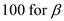
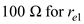
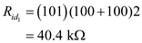
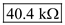
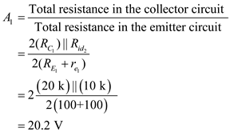
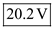
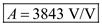

The Input resistance of the first stage is,
Substitute  ,  in equation.

The input resistance of the second stage is .
Hence the internal resistance of the first stage has increased.
Now in the second stage the input resistance is,
Substitute , in equation.
Hence the voltage gain in the first stage is,

Hence the voltage gain in the first stage is .
Therefore, the voltage gain in the first stage has decreased.
The voltage gain of the second stage of the circuit is,
Now, the circuit in the third stage and fourth stage are not affected by the changes made in the first stage, hence we notice that, have not changed.
Hence the over all gain of the circuit is
Hence the over all gain is .
Therefore, the overall gain, has decreased.